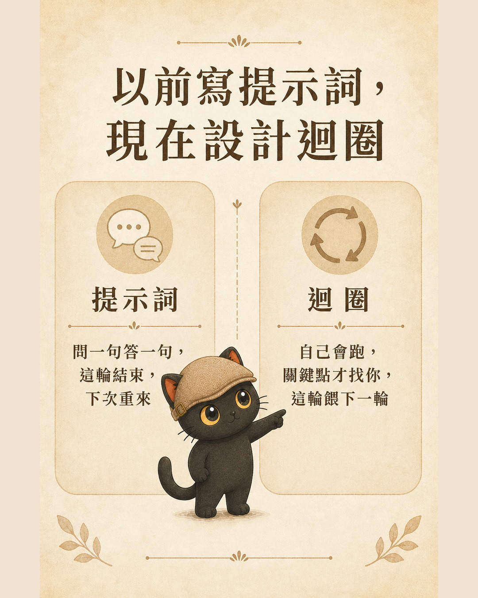
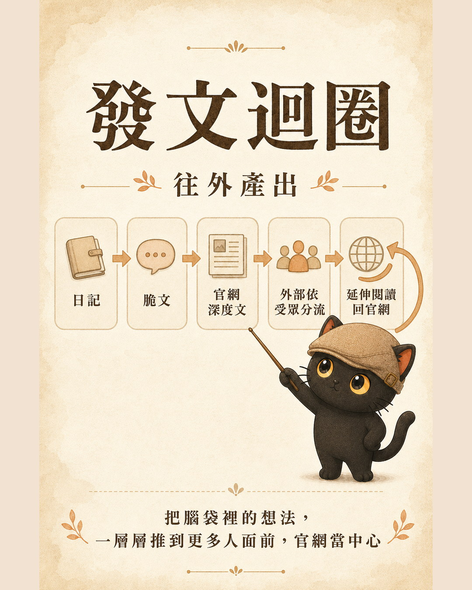
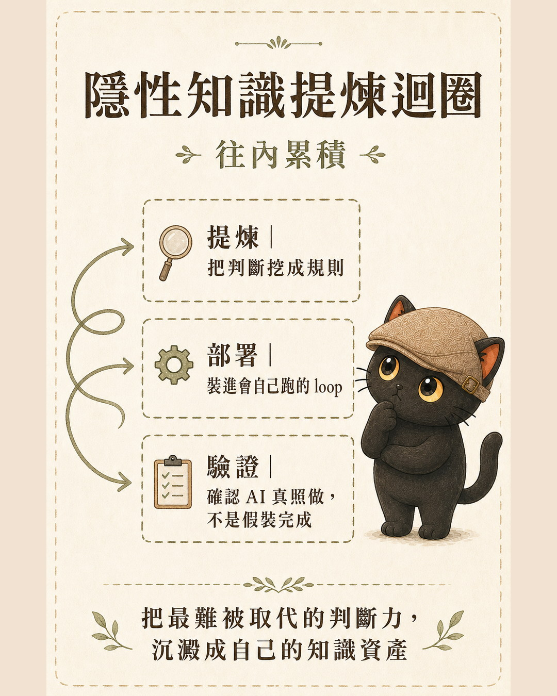
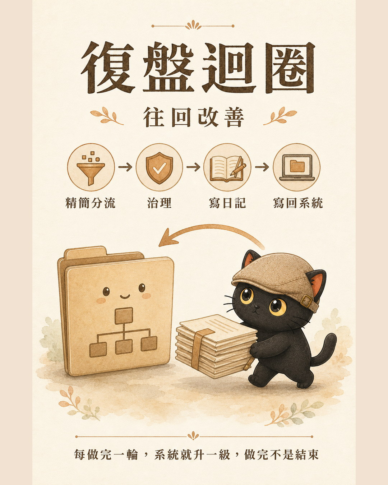
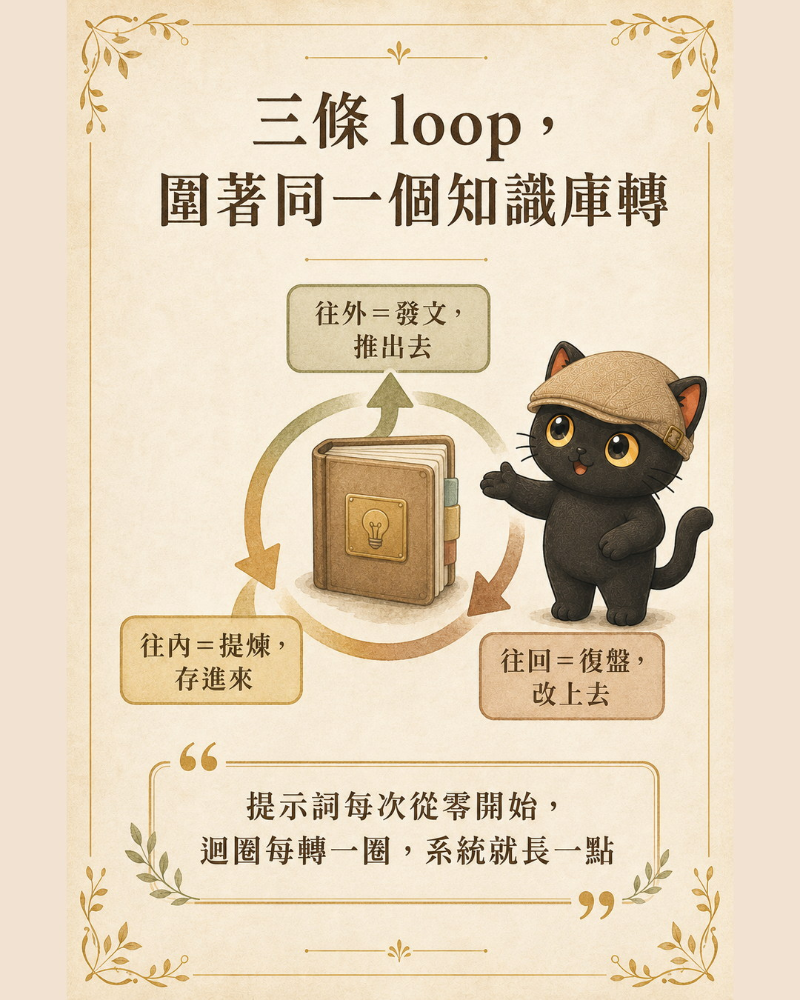

Do you find yourself re-explaining the same task to AI every single time? You do not have to. You do not need to know how to code. You only need to know how to write rules, and you can get AI to follow your methods systematically. A prompt says "do this for me now" and is forgotten the moment the exchange ends. A rule says "always do it this way from now on," written once, running continuously. This article covers the three loops I built on top of rules, and one first step you can take today.
- People who use AI every day but feel like they are starting from scratch every time
- People who want repetitive work to run on its own without relying purely on memory
- Knowledge workers who cannot code but want a more systematic way to make AI work for them
- Why coding is not required, only rule-writing
- The difference between a prompt and a rule, stated plainly
- Three loops you can borrow directly, plus one first step you can take today
What a loop actually is
A prompt is one-shot. You ask once, it answers once, and that exchange is over. Next time, you start again.
A loop is different. It is a cycle that starts on its own, runs on its own, and only comes back to you at the moments that matter. You take something you do repeatedly, break it into stages, give each stage a clear input, output, and completion condition, and let it run round after round. The key is that it feeds itself: each round's output becomes the next round's input.
I have written a separate piece on the details of loop engineering (link at the end). For now, just hold onto this one sentence: a prompt waits for you to push it; a loop turns on its own once you have designed it.
How do you get it to turn on its own? The key is writing rules, not code. Describe in plain language how you normally judge and decide, hand those descriptions to AI as rules, and it will follow them round after round. If you can write rules, you can design your own loops.

My three loops
These three loops were not planned from the start. They grew one by one.
The first workflow I turned into a loop was publishing. How does an idea travel from a journal entry and a short post all the way into a full article on my site and then out to other platforms? I broke that journey into stages, wrote it as rules, and let it run. (I wrote a full piece on that loop separately: Using One Article's Workflow to Explain What Loop Engineering Is.)
Once publishing was running smoothly, I noticed two other workflows I was running every day that were equally suited to becoming loops: one for distilling judgments into rules, and one for looking back and improving after the fact. That is how these three loops came to be.
Loop 1: Publishing Loop
Turns one idea into content across multiple platforms. An observation goes into a journal entry, gets condensed into a short post for first publication, earns a full article on the site if it is worth developing further, then gets distributed to other platforms by audience segment, with every external version pointing back to the site for further reading. It moves outward: taking what is in your head and surfacing it in layers to more people, while keeping your site as the permanent center.

Loop 2: Tacit Knowledge Distillation Loop
Turns your own judgment into rules that AI can actually use, then confirms AI is genuinely following them. First, use targeted questions to surface the implicit judgments you make fluently but cannot yet articulate, turning them into explicit rules. Then load those rules into a workflow that runs continuously. Finally, use machine-checkable criteria to confirm AI is actually following the rules rather than producing outputs that look complete but are not. It moves inward: depositing your hardest-to-replace judgment, one rule at a time, into your own knowledge assets.
There is one boundary I hold carefully here. What can be written as machine-checkable criteria extends only as far as "judgment standards that can be stated explicitly." Intuition and values above that level stay with the person. I do not force those into a machine.

Loop 3: Retrospective Loop
After completing a stretch of work, look back and make the system better. First, decide whether the output is content or infrastructure, and trim what should be trimmed. Then assess whether any rules or Skills need updating. Write a log of the process to preserve a record. Finally, write what was learned back into the relevant rules or Skills so the next round starts from a higher baseline. It moves backward: each completed round upgrades the system. Finishing is not an end point.

How the three loops fit together
Only after building all three did I notice something: they each point in a different direction. Publishing moves outward, distillation moves inward, retrospection moves backward. Three loops orbiting the same thing: my own knowledge base and system.
Distillation deposits judgments into the knowledge base. Publishing draws from the knowledge base and pushes content outward. Retrospection writes each experience back into the knowledge base. Deposit, push out, write back: with all three running, the knowledge base grows richer with each turn rather than standing still.

Prompts you can copy: let AI help you build a loop
By now you probably understand the concept. But a concept does not become your loop on its own. You need something you can put to use. The three prompt templates below are ready to copy. Paste any of them into your AI agent of choice (ChatGPT, Claude, or Codex all work) and it will get to work.
For each loop, we use the same five dimensions to describe it clearly. Fill these in when designing, and neither you nor AI will miss anything important:
- Trigger: What event or condition starts this loop.
- What to read each time: Which logs, examples, rules, or materials to review before each run.
- How to decide: Which standards govern choices when the loop reaches a decision point.
- What counts as done: The verifiable state that marks the end of a run.
- Human checkpoints: Which steps require your sign-off before AI continues.
Prompt 1: Take stock and find the three workflows most worth turning into loops
Start here to let AI review what you have been doing and identify the best candidates for automation.
I want to turn the repetitive work I do into loops that can run repeatedly. Please handle two scenarios: A. If you can see my work logs, past records, or examples, start by reviewing those and identify three tasks I have been doing repeatedly with roughly consistent steps. B. If you cannot see any records, ask me to describe three tasks I do repeatedly, and for each one ask: what is the goal, what information is needed, and how do I normally judge whether it went well. Then use these five columns to organize the three tasks: Trigger, What to read each time, How to decide, What counts as done, Human checkpoints. Under "How to decide," you may infer from my past patterns, but mark each inference as "pending my confirmation." Finally, recommend the one loop most worth building first and explain your reasoning.
Prompt 2: Design one of those workflows into a complete loop
Once you have taken stock and chosen one, use this prompt to design it in full.
Please help me design "(fill in the workflow you want to build)" as a loop. Output using these five columns: Trigger, What to read each time, How to decide, What counts as done, Human checkpoints. Write the rules in my own voice. Ask me any necessary questions before starting, then produce a version I can copy and use directly.
Prompt 3: After running the loop for a while, make it more accurate
Once a loop has run a few times, use this prompt to turn your corrections into new rules.
Please review the recent outputs from this loop, along with my corrections and comments on each run. Identify the places where AI made consistent errors, missed things, or produced text I rewrote. Organize those findings into new rules, each written as "whenever X, do Y." Then list which rules need my confirmation before being added to the loop officially.
- When AI infers your judgment standards, it will mark them as "pending confirmation." Do not treat them as official rules until you have reviewed and confirmed them.
- Write completion conditions as verifiable outcomes, for example "produce three headline options each with one sentence of rationale," rather than something vague like "organize everything."
- If you have no past records, start by describing three recent repetitive tasks out loud. AI can only work with what you tell it. It cannot fill in what you have not said.
Not every loop needs to run all the way through
One clarification before closing. Designing something as a loop does not mean you always need to run the full cycle. A loop is a map showing you where you could go, not a conveyor belt that cannot be stopped.
If I only want to capture one thought, I stop at the journal. If I want to share something briefly, I stop at the short post. Only when something is genuinely worth developing further do I carry it up to a full site article. Stop when you should. Pull back when returns are diminishing. Do not run a loop to completion just for the sake of completing it.
The practical benefit a loop gives me is simple: I do not have to start over every time I do the same thing. For knowledge workers, that translates to moving time away from repetitive effort and toward work that actually accumulates. Tools, platforms, and models will keep changing, but the ability to take what you do repeatedly and design it into a loop that runs on its own and feeds itself back: that capability will always be worth having.
If you want to start, do one thing today: write down the instruction you most often find yourself re-explaining to AI. That is your first rule. You do not need to know how to code. If you can write rules, you are already designing your own loops.
Want to turn your workflows into loops?
I am Coach Jiang, a tacit knowledge distiller and AI application planner. I host two free online talks every month, sharing how to make AI a genuine thinking partner, and how to organize your knowledge and experience into prompts, Skills, and knowledge bases that both people and AI can use. Whether you want to keep learning or have a consulting need, the community is a good place to start.
Let's talk AI and knowledge management, and turn workflows into loops that run themselves.
Join the community ↗